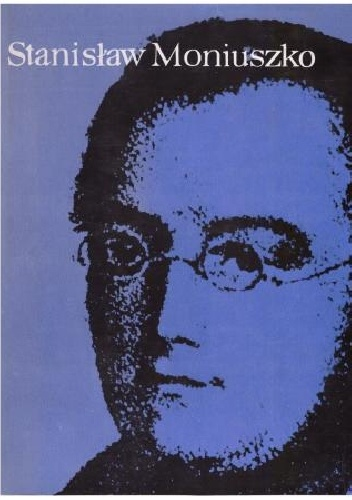

Stanisław sporo podróżował. Na początku była to Praga i Paryż, w którym tą zaczął pisać operę Flis. Po sukcesie Halki i skończeniu prac nad największym dziełem Sraszny Dwór wyjechał do Lwowa. Nie został tam długo gdyż wrócił do Polski. W Krakowie dyrygował w jego własnej kantacie Widmo. Wyjechał potem do Pragi, by spotkać się z równie szanowanym wtedy kompzytorem - B.Smetaną. Na końcu pojechał do Rosji, gdzie również wystawiano Halkę. Zmarł w Polsce, przytłoczony pracą. Jego pogrzem podobno był manifestacją narodową o rekordowej liczebności.
